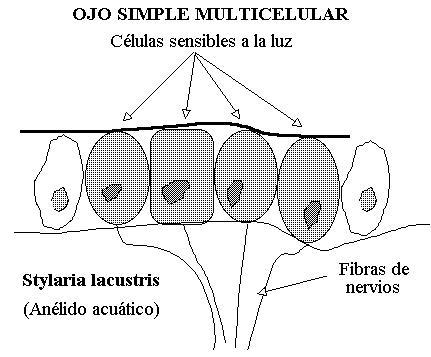
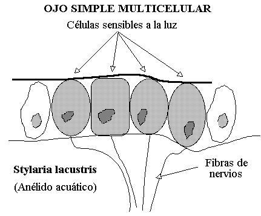
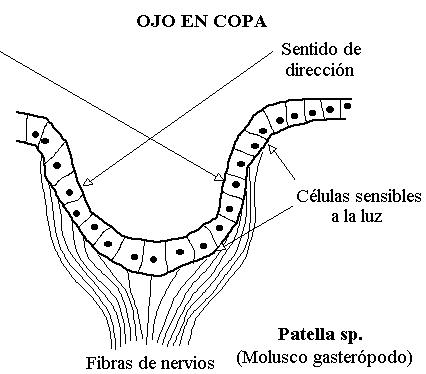
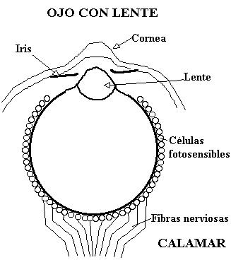
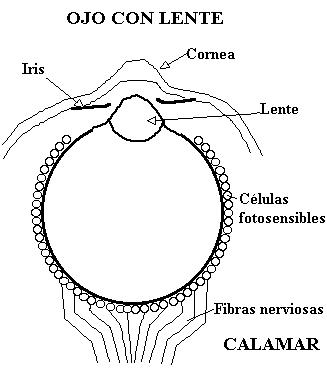
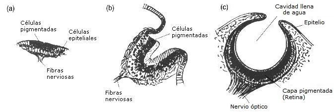
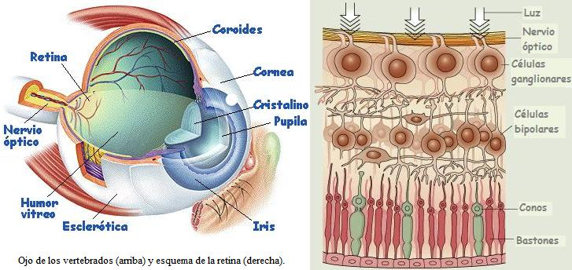
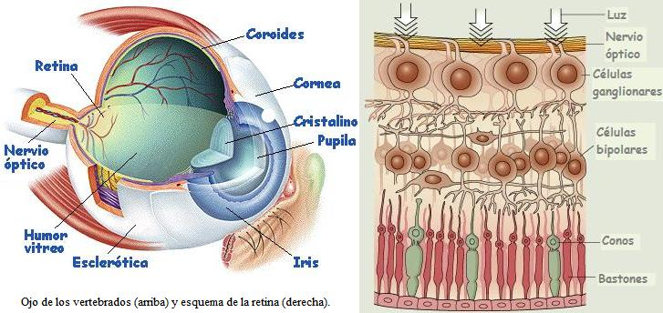
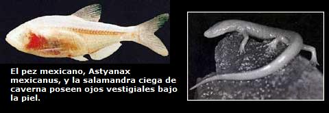
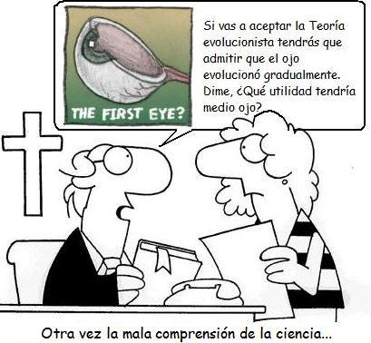

Con relativa frecuencia los creacionistas se preguntan: ¿Cómo podría formarse gradualmente el ojo humano? ¿Para que serviría el 50% de un ojo? He aquí la objeción tomada del texto antievolucionista de los Testigos de Jehová:
“Considere órganos corporales como el ojo, el oído, el cerebro. Todos son tremendamente complejos, mucho más que las más intrincadas invenciones del hombre. Un problema para la evolución ha sido el hecho de que todas las partes de tales órganos tienen que trabajar juntas para que haya vista, oído y pensamiento. Tales órganos habrían sido inútiles hasta que todas las partes individuales estuvieran completas. De modo que surge la pregunta: ¿Es posible que el elemento no guiado del azar, del cual se piensa que es una fuerza impulsora de la evolución, pudiera haber juntado todas estas partes al tiempo apropiado para producir mecanismos tan elaborados?
—[WBTS1985], p. 18
El problema de los creacionistas es suponer que la evolución trabaja juntando los órganos de manera similar a una ensambladora de autos. Cuando una persona sin conocimiento en biología lee argumentos como los anteriores es engañada, pues se describe la evolución de la manera como no ocurre.
Los orígenes del ojo hay que buscarla en la capacidad fotosensible de algunas células. Muchos unicelulares pueden ubicarse espacialmente, es decir nadar hacía arriba o hacía abajo, gracias a que son sensibles a la luz. Esta sencilla distinción entre luz y oscuridad fue el primer paso en la evolución del ojo.
Para este primer paso puede considerarse posible al ver el fotorreceptor que existe en Euglena 1, un protista fotosintético que tiene un organelo sensible a la luz conectado con el flagelo que le permite la locomoción. No se afirma que los ojos de los humanos se remonten al fotorreceptor (eyespot en inglés) de Euglena, solo se muestra que este primer paso es posible en la naturaleza.
El siguiente paso involucraría a un animal pluricelular. Tendríamos una capa de células sensibles a la luz. Esto lo podemos encontrar en las lombrices de tierra actuales y en anélidos acuáticos que ya presentan una capa ordenada de células fotosensibles.
 
Luego, la selección natural favoreció a aquellos organismos que tuviesen capacidad fotosensible ya que le permitiría a su poseedor nadar hacía a la superficie, conseguir alimento u ocultarse cuando una sombra se presentaba el organismo y así salvarse de un predador. Ahora si ésta capa de células se invaginase podría dar cabida a una mayor cantidad de células, y esto constituiría una ventaja. Esto no es cambio imposible pues solo sería necesaria una modificación en la forma de expresión de algunos genes ya existentes. Una capa de células fotosensibles invaginada puede obtener una nueva información no disponible para una capa plana, saber de donde provienen los haces de luz. Precisamente en el molusco gasterópodo Patella, (los gasterópodos son el grupo de las babosas y caracoles) se encuentra un estructura así.
En el gasterópodo Pleurotomaria encontramos una estructura invaginada mucho más profunda; En el género Haliotis encontramos un ojo casi cerrado; en el género Turbo el ojo ya está cerrado pero sin lente, y finalmente encontramos ojos cerrados y con lente en los géneros Murex y Nucella. Así pues hay ejemplos en la naturaleza que muestran que estos estadios intermedios son posibles. Añado que la presencia de una lente mejora muchísimo la visión, pero bien pueden existir organismos sin esta estructura, lo cual invalida el argumento creacionista arriba citado que afirma que: “Tales órganos habrían sido inútiles hasta que todas las partes individuales estuvieran completas”

 
Sobre la evolución del ojo, el científico John Rennie comenta:
“Generaciones de creacionistas han intentado contradecir a Darwin citando el ejemplo del ojo como una estructura que no podría haber evolucionado. La habilidad del ojo para proveer visión depende del arreglo perfecto de sus partes, dicen los críticos. La selección natural nunca podría haber favorecido las formas transicionales necesarias durante la evolución del ojo ¿Qué tan bueno es medio ojo? Anticipándose a esta crítica, Darwin sugirió que aún un ojo “incompleto” podría conferir beneficios (como ayudar a las criaturas a orientarse hacía la luz) y de ese modo sobrevivirían permitiendo futuros refinamientos evolutivos. La biología ha vindicado a Darwin: los investigadores han identificado ojos primitivos y órganos sensibles a la luz a través del reino animal y han ayudado a trazar la historia evolutiva del ojo a través de comparaciones genéticas. (Ahora parece que en varias familias de organismos los ojos han evolucionado independientemente.)”
—John Renie. 15 respuestas al sin sentido creacionista. Scientific American. Julio de 2002.

Darwin también notó que son las imperfecciones, aquellos hechos que pueden ser esgrimidos como evidencia del proceso evolutivo. En realidad la evolución actua “con lo que tiene a mano”, por esta razón muchos órganos muestran algunas características estructurales que no se habrían dado de haber sido inteligenemente diseñadas por un creador. Uno de estas características “chapuceras” se da en la estructura del ojo de los vertebrados.
En el ojo de cámara cerrada la retina es la capa de células fotosensibles que se encarga de hacer la traducción del estímulo (la luz) a un impulso nervioso. En el ojo del pulpo la capa de células nerviosas están orientadas directamente hacía la luz, mientras que las prolongaciones de las células nerviosas que forman el nervio óptico están al lado posterior en el que no llega la luz; de igualmente los vasos sanguíneos se encuentran en el lado posterior sin interponerse con la luz que incide sobre las células fottosensibles. Esto parece lógico, y seguramente los creacionistas mencionarán que tal disposición demuestra la planeación de antemano del creador al diseñar el ojo. Sin embargo, si miramos el ojo de los humanos la disposición de los axones de las neuronas pasan por delante de las células fotosensibles (los conos y los bastones), además de esto, el punto en el que se unen todos los axones de las células ganglionares generan un punto ciego en el ojo de los vertebrados.
 
Para evidenciar el punto ciego cierren el ojo derecho. Miren a cruz de la imagen de aquí abajo con el ojo izquierdo, a una distancia de alrededor de 25 cm. Prueben acercándose o alejándose de la imagen.
Otra forma de explorar el punto ciego es observando el punto de la imagen que sigue, también con el ojo izquierdo (y con el derecho cerrado). Prueben variando la distancia hasta que la línea cortada se vea llena.

Los pulpos no poseen un punto del espacio invisible, aunque si para los vertebrados. Esto como lo mencione porque la retina del cefalópodo está armada de forma distinta. El nervio óptico, en vez de salir desde el centro donde están los fotorreceptores, sale desde la parte más externa de la retina. Esto parece un detalle chapucero, no obra de un diseñador inteligente, y más acorde con el proceso de selección natural. ¿De haber aparecido el ojo directamente en su forma actual por una inteligencia previsora tendría el pulpo un ojo sin punto ciego y olvidaría tal detalle en su “obra maestra”?
También es interesante mencionar que hay muchas especies animales que viven en ambientes de total oscuridad y poseen ojos no funcionales, es decir sus ojos son estructuras vestigiales. Estas especies ciegas evolucionaron a partir de especies que tenían ojos funcionales, pero al colonizar ambientes oscuros la selección natural favoreció en algún momento a un mutante que desarrollaba ojos no funcionales, pues en un ambiente totalmente oscuro es más conveniente invertir la energía gastada en este órgano en otras estructuras, y así pasó esta variante a la población.
Las especies con ojos vestigiales no apoyan para nada la hipótesis del “diseño inteligente”, pues ¿para qué colocaría un diseñador ojos a una especie cavernícola que no los necesita como el pez Astyanax mexicanus?. Las cavernas del mundo poseen varias especies de peces, salamandras y grillos con ojos que atestiguan el origen a partir de otras especies (evolución) y no una creación planificada.
Referencias
- WBTS1985
-
“La vida ¿Cómo se presentó aquí? ¿Por evolución, o por creación?”, Watchtower Bible and Tract Society of New York, Inc. , 1985
Notas
- 1
-
Existe una excelente página en inglés sobre la diversidad de ojos en el mundo animal y su evolución. La página recomendada es: “Eye, Eye, Eye, Eye: Questions about Eyes. Ensayos por David Denning y Molly Kirk”
Volver a la sección Ciencias de los orígenes
Comentarios
Comments powered by Disqus